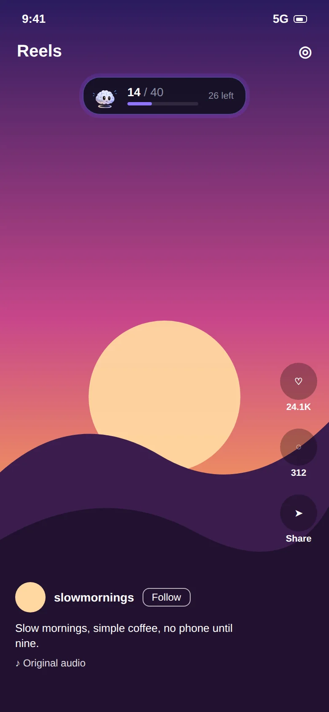
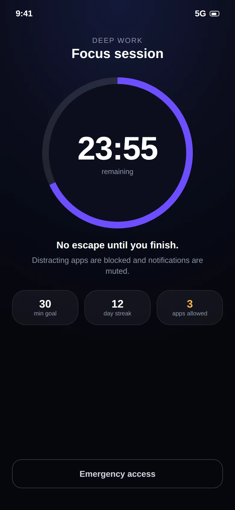
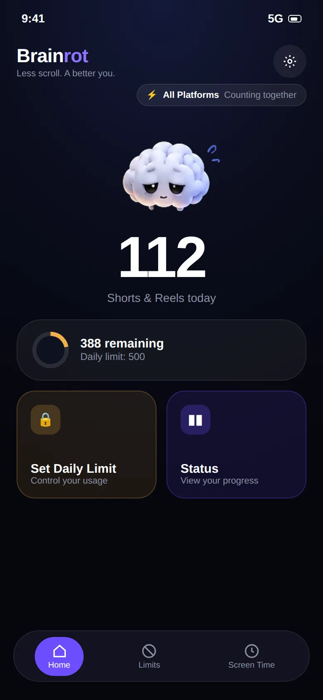
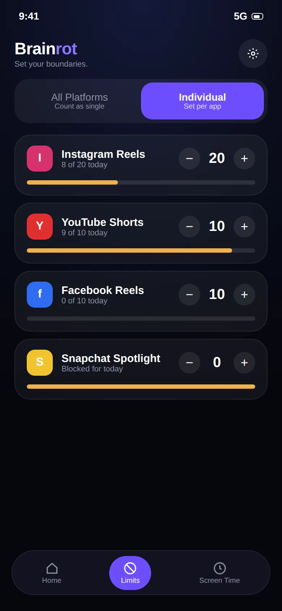
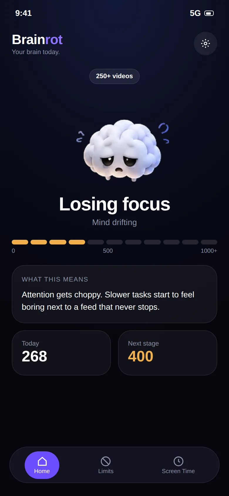
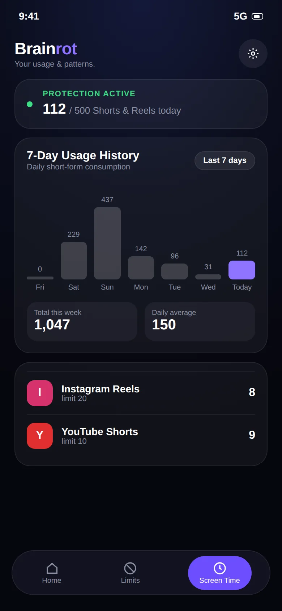
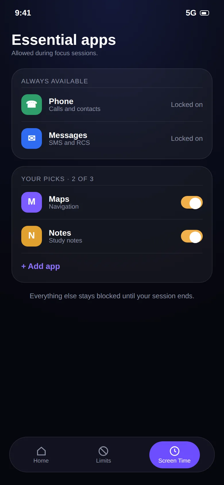

Scroll less.Keep your phone.
Brainrot counts every Reel, Short and Spotlight you watch and stops the feed when you hit your daily limit. Your DMs, calls and long videos stay exactly where they are.
- Free
- No account
- Works on-device


- 01Instagram Reels
- 02YouTube Shorts
- 03Facebook Reels
- 04Snapchat Spotlight
- 05Any app, by time
- 06No account
- 07On-device
Most screen time limits lock the whole app. But you open Instagram to message a friend and YouTube to watch a lecture. It's the endless vertical feed inside them that eats your evening.
A reel limiter and a screen time controller.
Most people end up needing both: something for the feeds that are built to keep you swiping, and something that guards the hours you've set aside to get things done.
Cap the feed, not the app.
Set a daily number, one shared across every app or a separate one for each. A small counter floats over the feed while you watch, so the number never sneaks up on you.
- Instagram Reels, YouTube Shorts, Facebook Reels, Snapchat Spotlight
- Shared "Unified" budget or per-app "Individual" limits
- Live counter and a 7-day history of your totals

Protect the hours that matter.
Start a timed focus session, or schedule them for study and work hours. Distracting apps are blocked, and only the essentials you pick, like Phone and Messages, stay available.
- Focus timer with quick presets, from 15 minutes up
- Recurring schedules for mornings, classes or deep-work blocks
- Daily time limits for any app on your phone

Feel the limit in ten seconds.
This is a demo with a limit of 8. Swipe up on the phone, or press the button. Watch the counter and the mascot, then see what happens at the end.
- The counter goes up with every swipe
- The mascot gets more tired as you go
- At the limit the feed closes. No snooze button
Demo only. Nothing is tracked.

That's your limit for today.
Messages and long videos are still open. The feed opens again at midnight.
Two minutes, three steps.
There's no account and nothing to configure except a number. Most people are done before their tea cools.
Install and open
Get Brainrot: Reel Limit from Google Play. The first screen walks you through everything it needs.
Allow Accessibility
This is how Android lets Brainrot see that a Reel or Short is open. It is used for counting swipes only. What it does and doesn't read →
Pick your limit
Choose a shared daily budget or one per app. Start with a number slightly under your current average and lower it each week.
What's in the app.
Built around one idea: the fewer decisions you have to make while tired, the better your limits hold.
Per-video counting
Counts each Reel, Short or Spotlight as you swipe, instead of guessing from minutes.
Unified or individual
One shared budget for every feed, or a separate cap for each app. Switch any time.
Floating counter
A small live number over the feed so you always know where you stand.
App time limits
Set a daily limit on any installed app, not just social media.
Focus sessions
Timed sessions that block distractions and keep only your essentials available.
Schedules
Plan once. Focus sessions start on their own on the days and times you choose.
Insights and streaks
See 7 days of totals, daily averages and your focus streak at a glance.
Brain mascot
Eleven mascot states turn a daily count into something you can feel.
Private by design
No account, no ads, no uploads. Your data stays on your phone.
A look at what you'll see.
Home shows today's count, Limits sets your rules, and Screen Time shows whether it's working. Drag or use the arrows.
Count every Reel
Live counterPer videoHit your limit
Hard stopNo snoozeYour daily home

CountRemainingSet the rules
UnifiedIndividualA limit per app

InstagramYouTubeWatch your brain

11 mascot stagesSee the trend

7-day historyDaily averageDeep focus
No escapeEmergency accessPlan it once
 RecurringPer day
RecurringPer dayKeep the essentials

PhoneMessages
Because a number is easy to ignore.
Numbers are easy to ignore. Drag the slider to see how the mascot changes across eleven stages, from 0 to 1000+ videos in a day.
0 videos
Jump to stage
Zero videos. Attention is intact and starting a hard task takes no extra effort.
How much of your year is going into the feed?
Short-form feeds are built so that 90 minutes feels like 10. Move the slider to your daily short-video time and see what a year adds up to.
"Time reclaimed" assumes a limit cuts your feed time in half. It's a rough illustration, not a guarantee. Your result depends on the limit you set.
Why timers alone don't hold.
A timer asks you to give up the whole app. Brainrot only asks you to give up the feed, which is a much easier deal to stick to.
| Brainrot | Built-in app timers | |
|---|---|---|
| Counts each Reel / Short | Yes, per video | No, minutes in app only |
| DMs and tutorials stay usable at the limit | Yes, only the feed closes | No, the whole app is locked |
| One shared budget across apps | Yes (Unified mode) | No, one timer per app |
| Live counter while you scroll | Yes | No |
| Needs Accessibility permission | Yes, used only to detect swipes | No |
Built for people with something to do.
If you've ever opened your phone for one message and looked up forty minutes later, this was built for you.
Study without the rabbit hole.
Keep lectures and study-group chats. Close the Shorts and Reels that eat the evening before an exam.
For students ProfessionalsProtect your deep work.
Phone breaks that actually stay breaks, plus scheduled focus sessions for your best hours.
For professionals ADHD & focusLimits that don't rely on memory.
Rules set in advance, enforced automatically, with no negotiating at 11pm.
Read the guideYour scrolling is your business.
Brainrot needs the Accessibility Service to count swipes, and we think you deserve a plain explanation of what that means.
- It reads
- Whether a Reel, Short or Spotlight screen is open, and when you swipe to the next one.
- It never reads
- Messages, passwords, what you type, search queries or your watch history.
- It stores
- Your limits and daily counts, on your phone only.
- It sends
- Nothing. No account, no ads, no analytics, no uploads.
Quick answers.
The short version of what people ask before installing. The full list is on the FAQ page.
What is Brainrot?
Brainrot (the app is called Brainrot: Reel Limit) is a free Android app that counts the short videos you watch and stops the feed when you reach your daily limit. It also lets you set time limits on any app and run timed focus sessions. Your messages, calls and long-form videos are left alone.
How is Brainrot different from a normal app blocker or Digital Wellbeing?
Normal app timers lock the whole app, including the parts you need, like Instagram DMs or YouTube tutorials. That is why people end up tapping "ignore limit" and going straight back to the feed. Brainrot counts and limits only the vertical short-video feed, so the rest of the app keeps working.
Can I block Instagram Reels but keep Instagram DMs?
Yes, that is the main use case. Brainrot counts videos in the Reels viewer. Direct messages, your profile, Stories and the regular feed stay open. When you hit your limit, only the Reels feed is closed. See the Instagram Reels blocker page for the details.
Can I limit YouTube Shorts but still watch normal YouTube videos?
Yes. Brainrot tells vertical Shorts apart from regular horizontal videos. Lectures, tutorials, podcasts and music keep playing without a counter. Only Shorts count toward your limit. More on the YouTube Shorts blocker page.
Why does Brainrot need the Accessibility Service permission?
Android has no other supported way for an app to know that you swiped to the next Reel or Short. The Accessibility Service lets Brainrot see that a short-video screen is open and that a swipe happened. That is all it is used for. Brainrot does not read your messages, passwords or what you type, and nothing is sent to a server. Details are in the privacy policy.
Does Brainrot collect or upload my data?
No. Your limits, daily counts and history are stored on your phone only. There is no account, no analytics SDK and no advertising. Uninstalling the app or clearing its data deletes everything.
Read before you scroll.
Practical guides on doomscrolling, attention and Android screen time.
How to stop doomscrolling
Seven tactics that work with your brain instead of against it.
Read How-toHow to reduce screen time on Android
The built-in tools, their limits, and a setup that sticks.
Read How-toBlock Instagram Reels without deleting Instagram
Keep the messages. Lose the infinite scroll.
ReadTake your scroll back.
Free on Google Play. Set a limit in two minutes and keep every app you actually need.